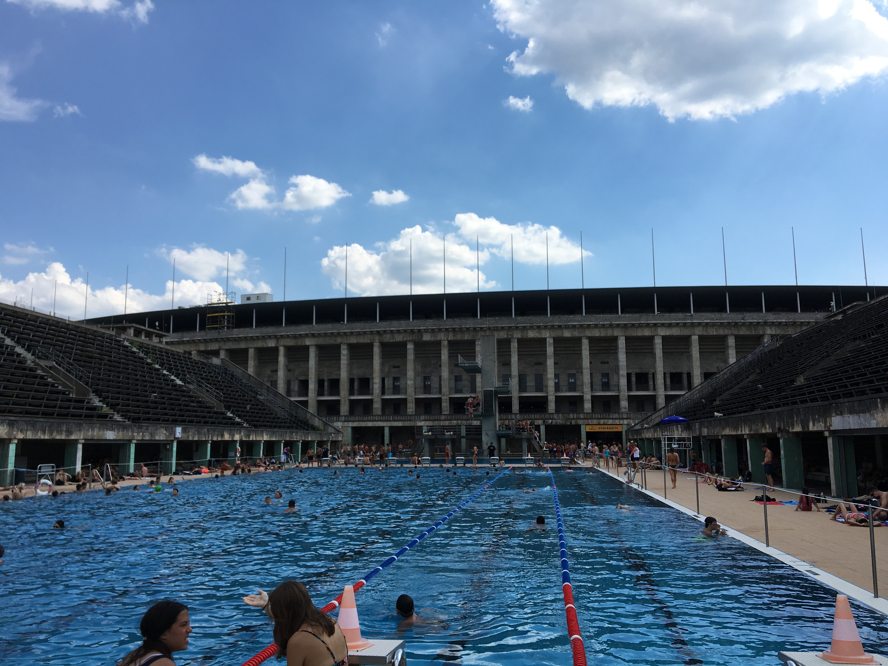

Week 3
Mon 30 July 2018 by nolanfeenyLimited traveling this week. Stayed in Berlin for the weekend, which gave me a chance to learn more about culture and way of life in the city.

Olympic Stadium pool: So cool. I didn’t know the architecture was designed by Nazis, but it was indeed intimidating. Shout out Jesse Owens. My left ear hearing was muffled for the next week though.
Church: next to a giant cathedral that was making bell sounds at the start of the service, which was almost like being in a Game of Thrones episode. Inside the newer functional church, there weren’t many people. Probably mostly tourists, but who knows. I understood enough German to realize that the pastor was speaking on how world leaders should be helping others in need, especially in underdeveloped countries such as Africa. This is interesting, tying politics and religion together since they’re so separate in America. However, Germany is currently a Christian democratic union, and I personally believe that the values, implemented without corruption, would have a beneficial impact on society.
I’m also learning about general culture and how it shapes the mindset of the people that live here. Everyone I’ve seen takes more responsibility for themselves and how they affect others. For example, the amount of people riding bikes, the rules regarding bike lanes, and sorting trash.
Class is conceptually so interesting and applicable to what I want to do with my life. We’re taking multiple scenarios regarding renewable energy, and simulating how they work in the real world. These simulations include how much energy is harvested based on the model of wind turbines or solar cells, how much is input into the grid, and the economics of the systems. It has been mostly Matlab, but also using some excel. The lectures, however, suck. This is because the German lecturers don’t speak the greatest english, so they are taking a lot of time reading slides that I’d personally be better off reading on my own. They also don’t always understand the questions that I ask, and start to explain something that I already understand. Still though - overall, it’s a great experience.
I’m also learning about myself. I have become a decent cook in recent weeks, because otherwise I would be broke or starving. Mainly have been making pasta with sauce and chicken strips or fish sticks, with frozen mixed vegetables and milk or fruit juice. Trying to be healthy. Since I don’t have a gym membership, I’ve been doing either 100 pushups or 50 pull-ups every single day when I wake up, which tbh is a good way to start the day.